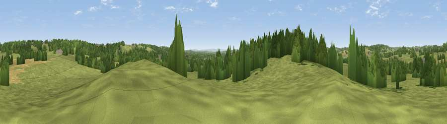

Viewpoint near Holt End
#30390 in England · top 55% of its area beats it · near Holt EndThe view, rendered

A 360° render of this exact spot computed from the terrain model, tree cover and land cover — summer colours, afternoon light, calibrated against photographs of famous viewpoints. Real trees, hedges and buildings will differ in detail.
The panorama
Grey silhouette: terrain skyline in each direction (720 bearings, Earth curvature and refraction included). Dashed green: skyline with trees (+15 m) and buildings (+8 m) as obstacles. Blue strip: how far the ground is visible on each bearing.
Where the view opens
Wedge length = distance to the farthest visible ground on that bearing (vegetation-aware). Rings at 10, 25 and 50 km.
What fills the view
57% grassland · 27% woodland · 10% cropland · 6% built-up
Angular shares of the visible panorama (visual magnitude), not map area. Landscape diversity 0.47 (0–1 Shannon).
Key numbers
More beautiful places nearby
The staircase of upgrades: each row has a higher view potential than everything closer. Driving times are estimates from straight-line distance, calibrated against real road routing — check an actual route before setting out.
| Place | Direction | Drive | Score |
|---|---|---|---|
| Viewpoint near Mappleborough Green | SE · 4 km | ~9 min | 57.0 |
| Viewpoint near Hopwood | NNW · 8 km | ~15 min | 57.7 |
| Round Hill | SSE · 8 km | ~17 min | 61.7 |
| Viewpoint near Cofton Hackett | NW · 9 km | ~17 min | 66.2 |
| Holywell Hill | NW · 12 km | ~22 min | 69.4 |
| Windmill Hill | NW · 13 km | ~23 min | 73.2 |
| Viewpoint near Clent | NW · 17 km | ~30 min | 73.8 |
| Viewpoint near Clent | NW · 17 km | ~30 min | 74.3 |
52.32693, -1.90054 · source: screening · position refined by local search. Computed location — check access rights before visiting.